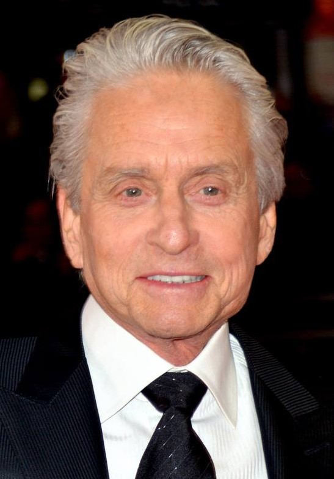

Aktor
Michael Douglas

Michael Kirk Douglas urodził się 25/09/1944. Uznany gwiazdor hollywoodzki, pełniący w przemyśle filmowym także
rolę producenta, laureat Oscara za film "Lot nad kukułczym gniazdem". Syn słynnego aktora amerykańskiego,
Kirka Douglasa. Karierę zaczynał jako asystent reżysera w filmach swojego ojca z lat 60-tych.
Najbardziej znany z takich ról jak:
- William "D-Fens" Foster w filmie "Upadek" 1993 rok
- Gordon Gekko w filmie "Wall Street" 1987 rok (zdobył Oscara)
- Liberace w filmie "Wielki Liberace" 2013 rok (zdobył Złoty Glob)
- Nicholas Van Orton w filmie "Gra" 1997 rok
- Sandy Kominsky w serialu "The Kominsky Method" 2018-2021 rok (zdobył Złoty Glob)
- Źródła:
- https://biografia24.pl/michael-douglas/ data dostępu: 30 listopada 2022 rok
- https://www.filmweb.pl/person/Michael+Douglas-165 data dostępu: 30 listopada 2022 rok